Stone_Left · 85×101 · 14 colors
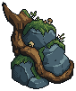
The separated upper and lower stone groups are removed. A cohesive boulder and wrapping roots anchor each lower corner, with small modular mushrooms and moss.
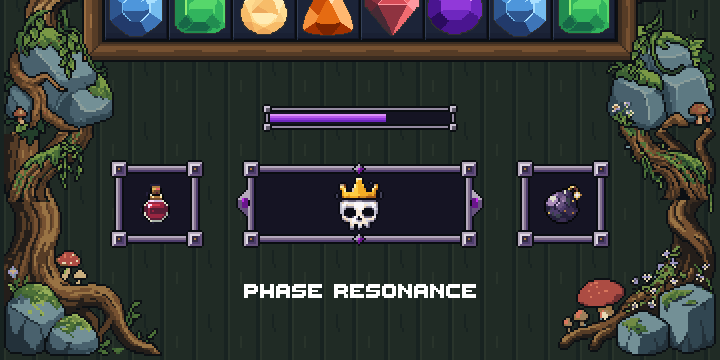
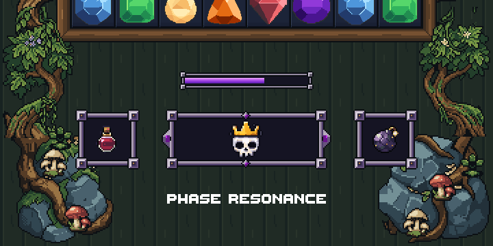

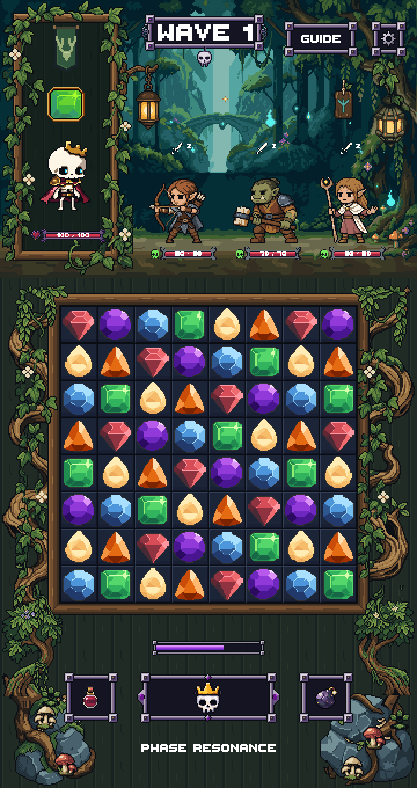

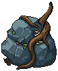
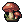
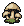
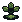
Unity compile and render checks passed at 720×1360 and 1440×2720. Exact pixel comparison protects the locked regions. Native LibreSprite reopen checks passed. These are static Unity art-review captures, not production combat or device tests.
PixelLab usage: 53 subscription generations, $0 USD credits. Includes the rejected tall studies and oversized accent studies; all raw history is retained.
Report · Verification details · Lineage · Unity results · Comparison PNG
Unselected generations are retained as process history, not approved art.
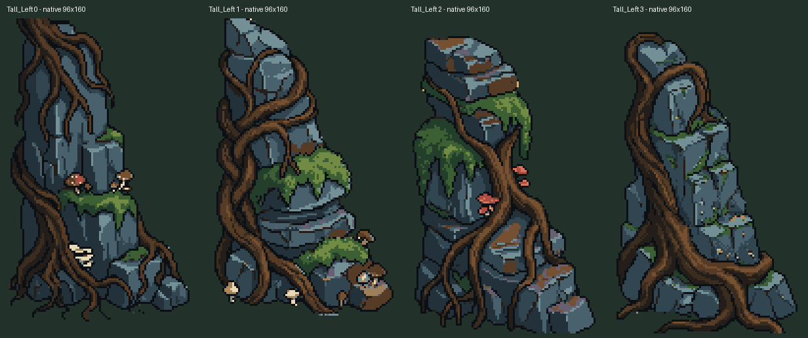
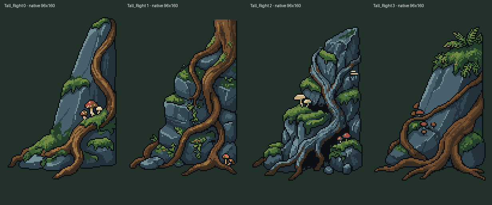
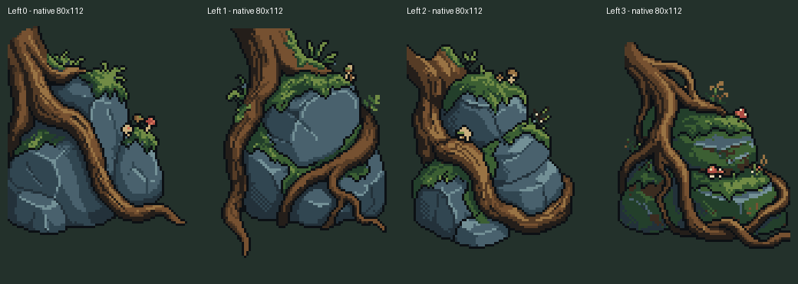
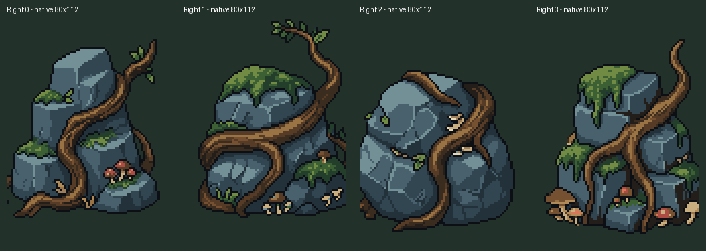
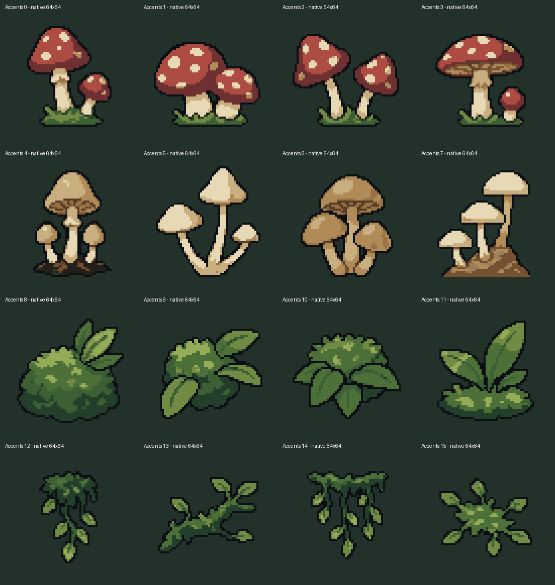